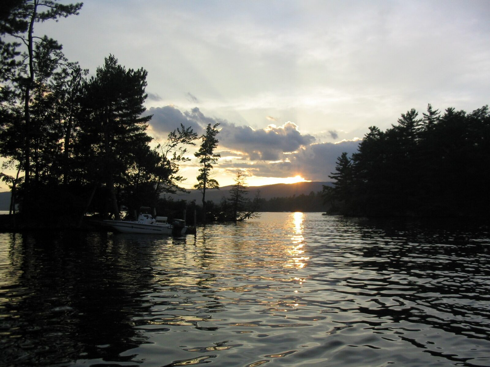
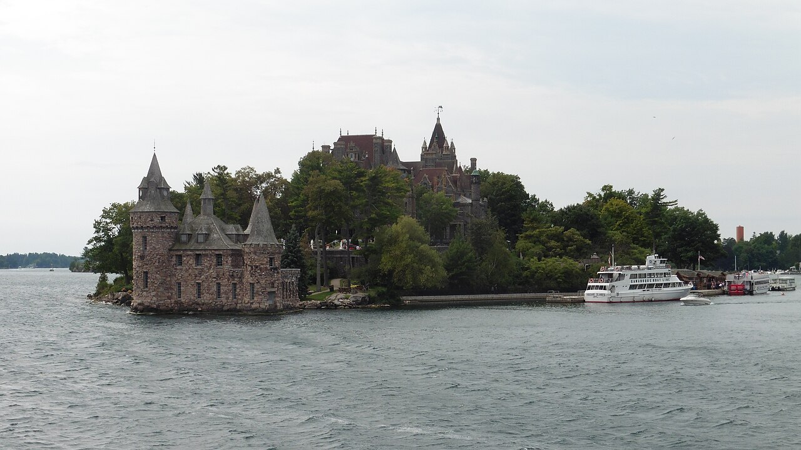
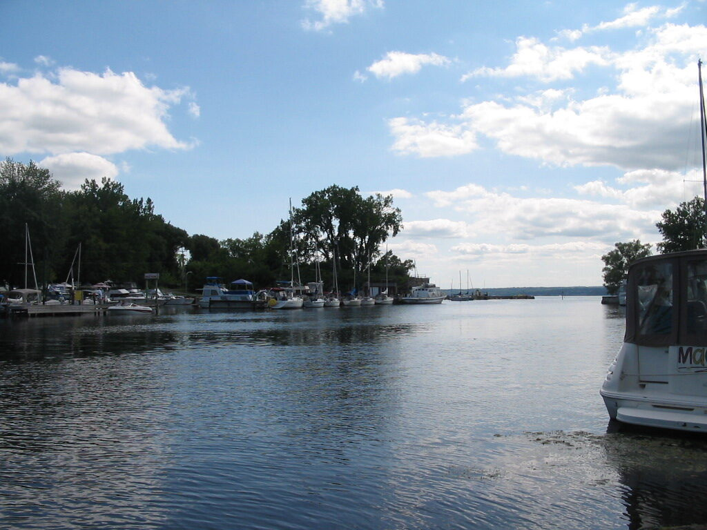
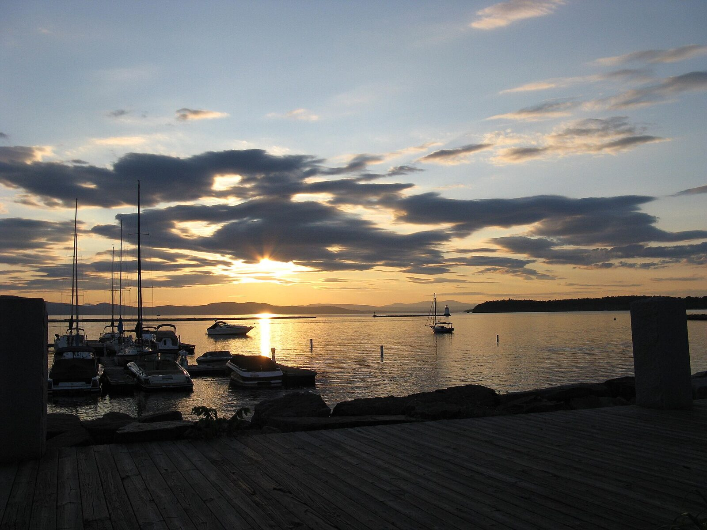
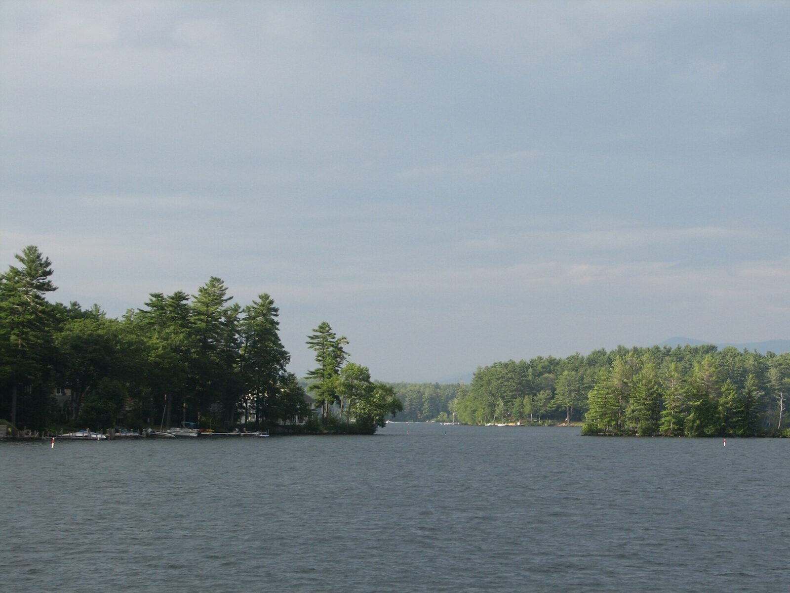
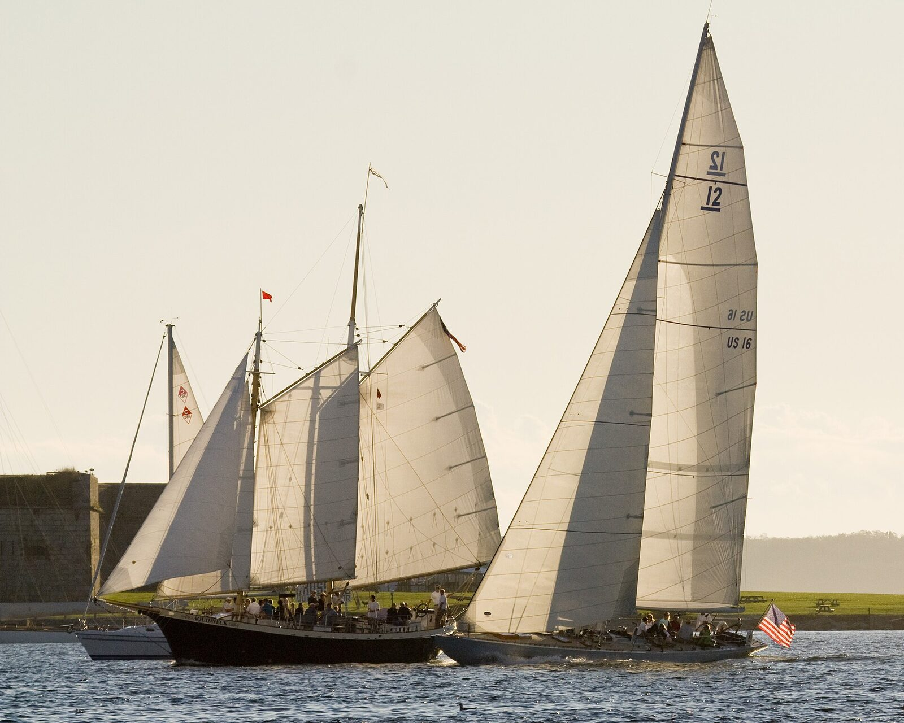
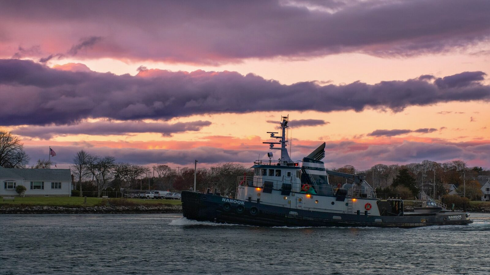
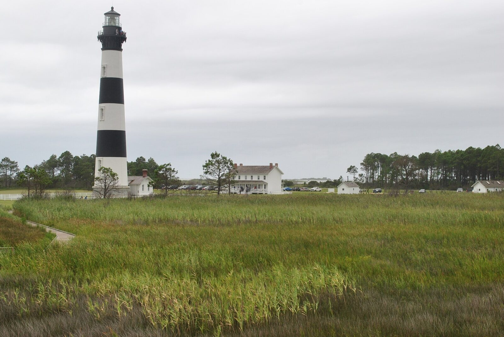
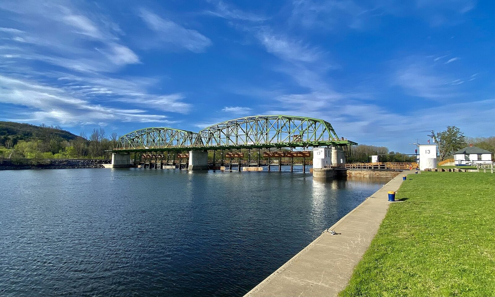

New York
Lake George
Mountain views, island camping, family attractions and waterfront stops.
Open guidePractical guides for memorable boating weekends, from Adirondack lakes to historic coastal harbors.
Every guide covers the trip shape, sensible home bases, route planning and what to verify before departure.

Mountain views, island camping, family attractions and waterfront stops.
Open guide
Historic castles, hidden coves and one of North America's great cruising regions.
Open guide
Wine country, deep blue water and easy weekends from Central New York.
Open guideFreshwater, saltwater, historic ports and lock-through travel—each with its own dedicated planning guide.

Island passages, mountain horizons and historic waterfront towns on one enormous cruising lake.
Open guide
A classic New England lake weekend with wooded islands, busy villages and endless day-cruise options.
Open guide
Harbor sailing, Gilded Age shoreline and a walkable waterfront built for a polished coastal weekend.
Open guide
Harbors, beaches and salt-air towns connected by very different waters on the bay and Atlantic sides.
Open guide
Historic ports, quiet creeks, legendary seafood and enough water for a lifetime of cruising.
Open guide
Lock-through adventure, canal towns and a slower kind of boating across the heart of New York.
Open guide